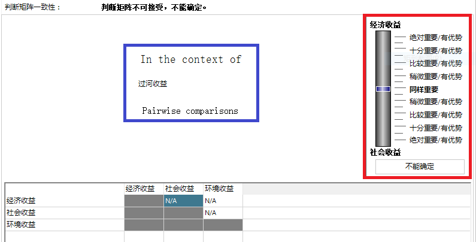
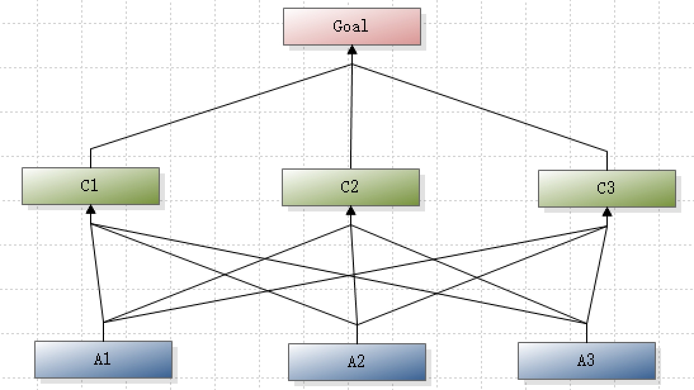
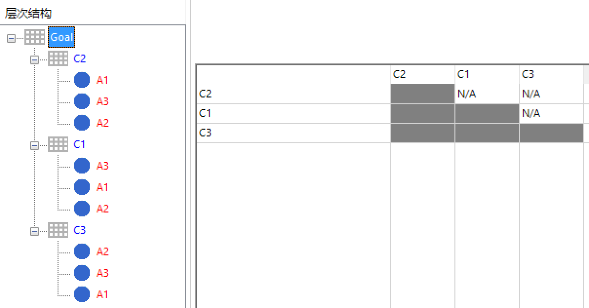
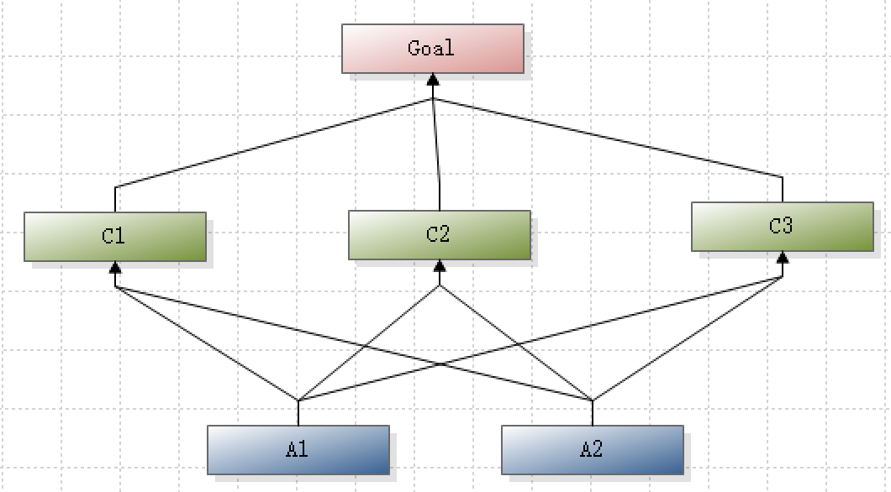
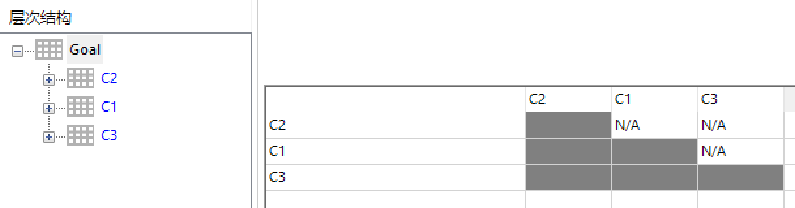
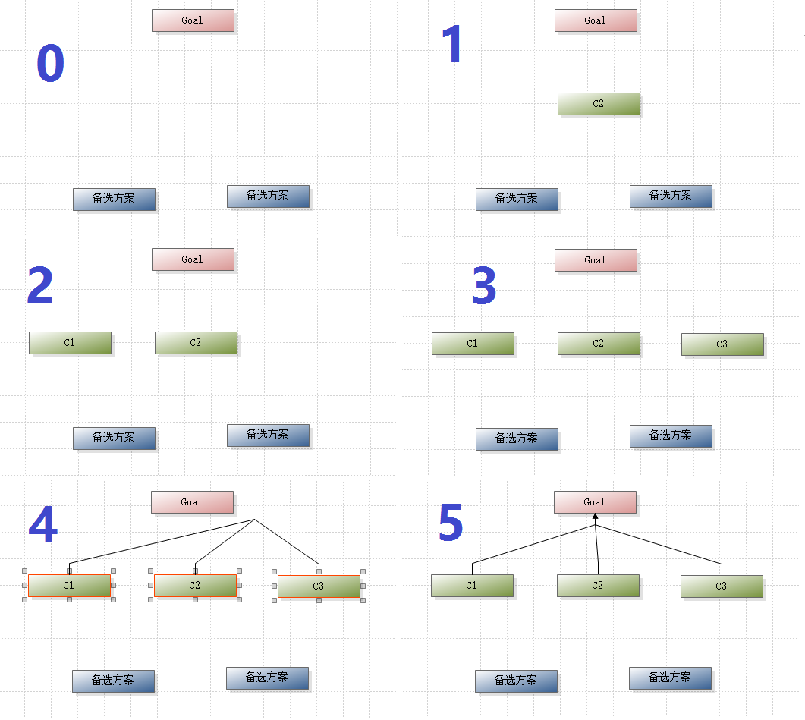
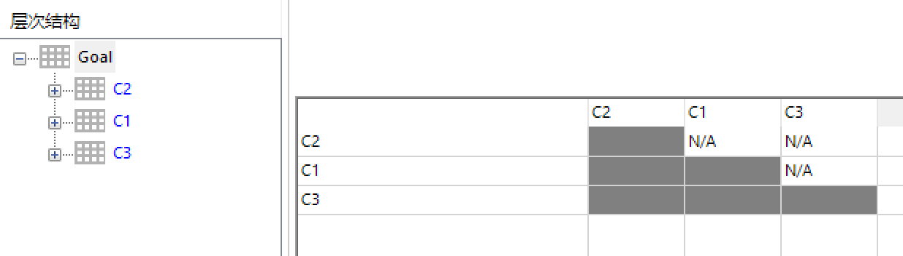

概述
yaahp模型绘制完成后, 解析出的判断矩阵中的元素顺序并不是按照层次模型中的要素位置顺序排列, 而是根据要素之间连接的创建顺序排列的.
yaahp中没有提供按位置顺序排列判断矩阵要素顺序功能的原因如下:
1. 一般情况不需要这个功能
判断矩阵中要素的排列顺序只是影响输入数据到判断矩阵时的顺序, 而有按照一定顺序输入判断矩阵数据需求的情况, 一般是已经有回收好的专家决策数据(而且使用了其他格式的调查表, 而不是yaahp生成的调查表), 如果能够按照一定的顺序填写会是输入数据工作更加方便.
下面以下图所示的为”过河收益”判断矩阵输入数据为例, 说明一般情况下是不需要关心顺序问题的.
下图中的判断矩阵需要填写上三角各个要素的决策数据, 在选中其中一个要素(Goal)后, 判断矩阵正上方会有明显的关于两两比较问题提示(图中蓝色框起来的部分), 而右上方的拖动条上下分别显示了要进行比较的两个因素(经济收益和社会收益, 图中红色框起来的部分), 其含义就是”对于过河收益, 比较经济收益和社会收益哪个更重要/更有优势”.

一个个地选择需要输入数据的判断矩阵要素, 观察决策问题是什么, 并使用拖动条完成决策数据的输入, 可以看出这个过程中判断矩阵要素的排列顺序如何其实并不需要关注.
2. 实现起来比较复杂
为了实现按要素在层次模型图中的摆放位置排列判断矩阵要素顺序, 需要在解析模型时进行做进一步处理, 具有一定复杂程度.
基于这两个原因, “按要素位置排列判断矩阵对应要素的顺序”这个功能特性并不是非常必要的, 或者至少它的实现优先级比较低, 所以yaahp至今没有提供这个功能. 但是也有一些用户提出了控制要素顺序的需求, 本文给出具体的操作方法.
问题描述
使用yaahp完成编辑模型, 然后在输入判断矩阵数据时, 一般会发现判断矩阵在层次树上的排列顺序以及判断矩阵中要素的排列顺序与我们期望的是相同的. 例如下面图中的层次模型:

一般情况下解析生成的判断矩阵及其中要素的排列顺序如下图所示:
但有时解析生成的判断矩阵及其中要素的排列顺序确是乱的, 如下图所示:

准确地控制判断矩阵中要素的排列顺序
可以通过两种方式来控制判断矩阵中元素的排列顺序:
- 通过控制要素的连接顺序
- 通过控制要素的创建顺序
通过控制要素的连接顺序
一个判断矩阵涉及一个上层要素(Goal)和多个它的影响因素(C1, C2,…,Cn), 判断矩阵中各个要素的顺序如何, 由C1, C2,…,Cn连接到Goal的时间顺序确定.
例如下图中, “Goal”的影响因素有”C1”, “C2”和”C3”.

如果希望判断矩阵”Goal”中各要素的排列顺序为”C2”,”C1”,”C3”, 那就应该按以下的顺序建立连接:
1) 首先连接"C2"和"Goal";
2) 然后连接"C1"和"Goal";
3) 最后连接"C3"和"Goal".
如下图所示:
这样, 判断矩阵中元素的排列顺序就是”C2”,”C1”,”C3”了, 如下图所示:

通过控制要素的创建顺序
编辑层次模型时一个个地连接要素非常耗时, yaahp提供了一次添加多个要素间的连接关系来简化要素连接操作.
当一次连接多个要素时, 各连接创建的顺序根据要素创建的时间顺序排列.
例如还是刚才的模型, 想要让判断矩阵中的元素排列顺序为”C2”,”C1”,”C3”, 可以这样做:
1) 创建要素"C2";
2) 创建要素"C1";
3) 创建要素"C3";
4) 选中这三个要素, 并选择""一次将它们连接到"Goal".
这样判断矩阵中的元素排列顺序也是”C2”,”C1”,”C3”了, 如下图所示:

这样, 判断矩阵中元素的排列顺序也是”C2”,”C1”,”C3”, 如下图所示:

总结
以上就是准确控制判断矩阵中要素排列顺序的方法, 主要的思路就是:要素排列顺序依赖于连接的创建顺序. 理解了这种思路就可以随意地控制层次结构中的判断矩阵的排列顺序以及判断矩阵中要素的排列顺序了.